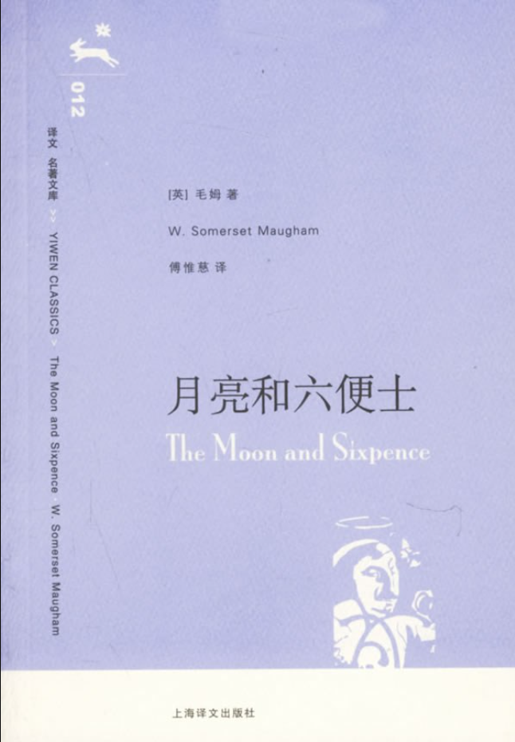

好书强推
- 内容简介

内容简介
（英）毛姆|原作名: The Moon and Sixpence|已完结
一个英国证券交易所的经纪人，本已有牢靠的职业和地位、美满的家庭， 但却迷恋上绘画，像“被魔鬼附了体”，突然弃家出走，到巴黎去追求绘 画的理想。通过这样一个一心追求艺术、不通人性世故的怪才，探索了艺术 的产生与本质、个性与天才的关系、艺术家与社会的矛盾等等引人深思的问 题。同时这本书也引发了人们对摆脱世俗束缚逃离世俗社会寻找心灵家园这一话题的思考，而关于南太平洋小岛的自然民风的描写也引人向往。 《月亮和六便士》说问世后，以情节入胜、文字深刻在文坛轰动一时，人们争相传看。在小说中，毛姆用 第一人称的叙述手法，借“我”之口，叙述整个故事，有人认为这篇小说的原型是法国印象派画家高更，这更 增加了它的传奇色彩，受到了全世界读者的关注。
- 第一章
- 第二章
- 第三章
- 第四章
- 第五章